Section 1.21 Implementing an Unordered List: Linked Lists
In order to implement an unordered list, we will construct what is commonly known as a linked list. Recall that we need to be sure that we can maintain the relative positioning of the items. However, there is no requirement that we maintain that positioning in contiguous memory. For example, consider the collection of items shown in Figure 1.21.1. It appears that these values have been placed randomly. If we can maintain some explicit information in each item, namely the location of the next item (see Figure 1.21.2), then the relative position of each item can be expressed by simply following the link from one item to the next.
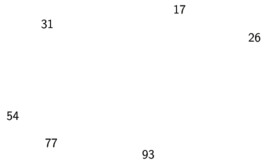
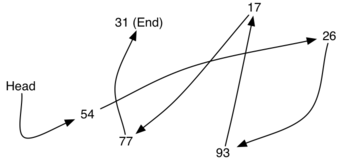
It is important to note that the location of the first item of the list must be explicitly specified. Once we know where the first item is, the first item can tell us where the second is, and so on. The external reference is often referred to as the head of the list. Similarly, the last item needs to know that there is no next item.
Subsection 1.21.1 The Node Class
The basic building block for the linked list implementation is the node. Each node object must hold at least two pieces of information. First, the node must contain the list item itself. We will call this the data field of the node. In addition, each node must hold a reference to the next node. Listing 1.21.3 shows the Python implementation. To construct a node, you need to supply the initial data value for the node. Evaluating the assignment statement below will yield a
Node object containing the value 93 (see Figure 1.21.1). You should note that we will typically represent a node object as shown in Figure 1.21.2. Hidden fields _data and _next of the Node class are turned into properties and can be accessed as data and next respectively.
class Node:
"""A node of a linked list"""
def __init__(self, node_data):
self._data = node_data
self._next = None
def get_data(self):
"""Get node data"""
return self._data
def set_data(self, node_data):
"""Set node data"""
self._data = node_data
data = property(get_data, set_data)
def get_next(self):
"""Get next node"""
return self._next
def set_next(self, node_next):
"""Set next node"""
self._next = node_next
next = property(get_next, set_next)
def __str__(self):
"""String"""
return str(self._data)
We create
Node objects in the usual way.
>>> temp = Node(93) >>> temp.data 93
The special Python reference value
None will play an important role in the Node class and later in the linked list itself. A reference to None will denote the fact that there is no next node. Note in the constructor that a node is initially created with next set to None. Since this is sometimes referred to as “grounding the node,” we will use the standard ground symbol to denote a reference that is referring to None. It is always a good idea to explicitly assign None to your initial next reference values.
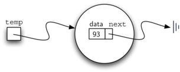
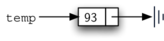
Subsection 1.21.2 The UnorderedList Class
As we suggested above, the unordered list will be built from a collection of nodes, each linked to the next by explicit references. As long as we know where to find the first node (containing the first item), each item after that can be found by successively following the next links. With this in mind, the
UnorderedList class must maintain a reference to the first node. Listing 1.21.6 shows the constructor. Note that each list object will maintain a single reference to the head of the list.
class UnorderedList:
def __init__(self):
self.head = None
Initially when we construct a list, there are no items. The assignment statement
>>> my_list = UnorderedList()
creates the linked list representation shown in Figure 1.21.7. As we discussed in the
Node class, the special reference None will again be used to state that the head of the list does not refer to anything. Eventually, the example list given earlier will be represented by a linked list as shown in Figure 1.21.8. The head of the list refers to the first node which contains the first item of the list. In turn, that node holds a reference to the next node (the next item), and so on. It is very important to note that the list class itself does not contain any node objects. Instead it contains a single reference to only the first node in the linked structure.
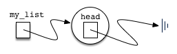
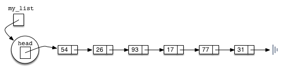
The
is_empty method, shown in Listing 1.21.9, simply checks to see if the head of the list is a reference to None. The result of the boolean expression self.head == None will only be true if there are no nodes in the linked list. Since a new list is empty, the constructor and the check for empty must be consistent with one another. This shows the advantage to using the reference None to denote the end of the linked structure. In Python, None can be compared to any reference. Two references are equal if they both refer to the same object. We will use this often in our remaining methods.
So how do we get items into our list? We need to implement the
add method. However, before we can do that, we need to address the important question of where in the linked list to place the new item. Since this list is unordered, the specific location of the new item with respect to the other items already in the list is not important. The new item can go anywhere. With that in mind, it makes sense to place the new item in the easiest location possible.
Recall that the linked list structure provides us with only one entry point, the head of the list. All of the other nodes can only be reached by accessing the first node and then following
next links. This means that the easiest place to add the new node is right at the head, or beginning, of the list. In other words, we will make the new item the first item of the list and the existing items will need to be linked to this new first item so that they follow.
>>> my_list.add(31) >>> my_list.add(77) >>> my_list.add(17) >>> my_list.add(93) >>> my_list.add(26) >>> my_list.add(54)
Note that since
31 is the first item added to the list, it will eventually be the last node on the linked list as every other item is added ahead of it. Also, since 54 is the last item added, it will become the data value in the first node of the linked list.
The
add method is shown in Listing 1.21.10. Each item of the list must reside in a node object. Line 2 creates a new node and places the item as its data. Now we must complete the process by linking the new node into the existing structure. This requires two steps as shown in Figure 1.21.11. Step 1 (line 3) changes the next reference of the new node to refer to the old first node of the list. Now that the rest of the list has been properly attached to the new node, we can modify the head of the list to refer to the new node. The assignment statement in line 4 sets the head of the list.
def add(self, item):
temp = Node(item)
temp.set_next(self.head)
self.head = temp
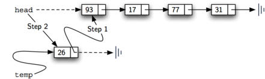
The order of the two steps described above is very important. What happens if the order of line 3 and line 4 is reversed? If the modification of the head of the list happens first, the result can be seen in Figure 1.21.12. Since the head was the only external reference to the list nodes, all of the original nodes are lost and can no longer be accessed.
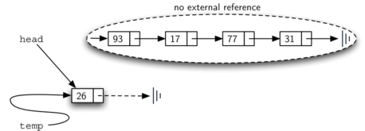
The next methods that we will implement–
size, search, and remove–are all based on a technique known as linked list traversal. Traversal refers to the process of systematically visiting each node. To do this we use an external reference that starts at the first node in the list. As we visit each node, we move the reference to the next node by “traversing” the next reference.
To implement the
size method, we need to traverse the linked list and keep a count of the number of nodes that occurred. Listing 1.21.13 shows the Python code for counting the number of nodes in the list. The external reference is called current and is initialized to the head of the list in line 2. At the start of the process we have not seen any nodes so the count is set to \(0\text{.}\) Lines 4–6 actually implement the traversal. As long as the current reference has not seen the end of the list (None), we move current along to the next node via the assignment statement in line 6. Again, the ability to compare a reference to None is very useful. Every time current moves to a new node, we add \(1\) to count. Finally, count gets returned after the iteration stops. Figure 1.21.14 shows this process as it proceeds down the list.
def size(self):
current = self.head
count = 0
while current is not None:
count = count + 1
current = current.next
return count
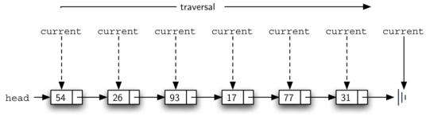
Searching for a value in a linked list implementation of an unordered list also uses the traversal technique. As we visit each node in the linked list we will ask whether the data stored there matches the item we are looking for. In this case, however, we may not have to traverse all the way to the end of the list. In fact, if we do get to the end of the list, that means that the item we are looking for must not be present. Also, if we do find the item, there is no need to continue.
Listing 1.21.15 shows the implementation for the
search method. As in the size method, the traversal is initialized to start at the head of the list (line 2). We continue to iterate over the list as long as there are more nodes to visit. The question in line 4 asks whether the data item is present in the current node. If so, we return True immediately.
def search(self, item):
current = self.head
while current is not None:
if current.data == item:
return True
current = current.next
return False
As an example, consider invoking the
search method looking for the item 17.
>>> my_list.search(17)
True
Since
17 is in the list, the traversal process needs to move only to the node containing 17. At that point, the condition in line 4 becomes True and we return the result of the search. This process can be seen in Figure 1.21.16.
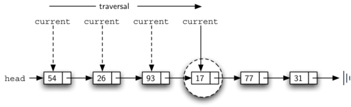
The
remove method requires two logical steps. First, we need to traverse the list looking for the item we want to remove. Once we find the item, we must remove it. If the item is not in the list, our method should raise a ValueError.
The first step is very similar to
search. Starting with an external reference set to the head of the list, we traverse the links until we discover the item we are looking for.
When the item is found and we break out of the loop,
current will be a reference to the node containing the item to be removed. But how do we remove it? One possibility would be to replace the value of the item with some marker that suggests that the item is no longer present. The problem with this approach is the number of nodes will no longer match the number of items. It would be much better to remove the item by removing the entire node.
In order to remove the node containing the item, we need to modify the link in the previous node so that it refers to the node that comes after
current. Unfortunately, there is no way to go backward in the linked list. Since current refers to the node ahead of the node where we would like to make the change, it is too late to make the necessary modification.
The solution to this dilemma is to use two external references as we traverse down the linked list.
current will behave just as it did before, marking the current location of the traversal. The new reference, which we will call previous, will always travel one node behind current. That way, when current stops at the node to be removed, previous will refer to the proper place in the linked list for the modification.
Listing 1.21.17 shows the complete
remove method. Lines 2–3 assign initial values to the two references. Note that current starts out at the list head as in the other traversal examples. previous, however, is assumed to always travel one node behind current. For this reason, previous starts out with a value of None since there is no node before the head (see Figure 1.21.18).
In lines 6–7 we ask whether the item stored in the current node is the item we wish to remove. If so, we break out of the loop. If we do not find the item,
previous and current must both be moved one node ahead. Again, the order of these two statements is crucial. previous must first be moved one node ahead to the location of current. At that point, current can be moved. This process is often referred to as inchworming, as previous must catch up to current before current moves ahead. Figure 1.21.19 shows the movement of previous and current as they progress down the list looking for the node containing the value 17.
def remove(self, item):
current = self.head
previous = None
while current is not None:
if current.data == item:
break
previous = current
current = current.next
if current is None:
raise ValueError("{} is not in the list".format(item))
if previous is None:
self.head = current.next
else:
previous.next = current.next
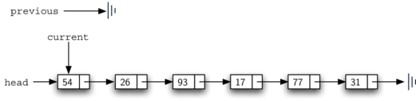
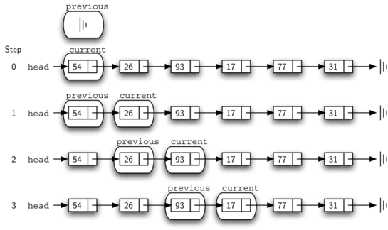
Once the searching step of the
remove has been completed, we need to remove the node from the linked list. Figure 1.21.20 shows the link that must be modified. However, there is a special case that needs to be addressed. If the item to be removed happens to be the first item in the list, then current will reference the first node in the linked list. This also means that previous will be None. We said earlier that previous would be referring to the node whose next reference needs to be modified in order to complete the removal. In this case, it is not previous but rather the head of the list that needs to be changed (see Figure 1.21.21). Another special case occurs if the item is not in the list. In that case current is None evaluates to True and an error is raised.
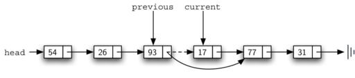
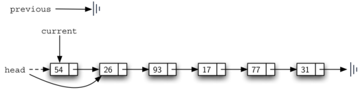
Line 13 allows us to check whether we are dealing with the special case described above. If
previous did not move, it will still have the value None when the loop breaks. In that case, the head of the list is modified to refer to the node after the current node (line 14), in effect removing the first node from the linked list. However, if previous is not None, the node to be removed is somewhere down the linked list structure. In this case the previous reference is providing us with the node whose next reference must be changed. Line 16 modifies the next property of the previous to accomplish the removal. Note that in both cases the destination of the reference change is current.next. One question that often arises is whether the two cases shown here will also handle the situation where the item to be removed is in the last node of the linked list. We leave that for you to consider.
You can try out the
UnorderedList class in ActiveCode 1.
The remaining methods
append, insert, index, and pop are left as exercises. Remember that each of these must take into account whether the change is taking place at the head of the list or someplace else. Also, insert, index, and pop require that we name the positions of the list. We will assume that position names are integers starting with 0.
Exercises Self Check
Part I: Implement the append method for UnorderedList. What is the time complexity of the method you created?
Part II: In the previous problem, you most likely created an append method that was \(O(n)\) If you add an instance variable to the UnorderedList class you can create an append method that is \(O(1)\text{.}\) Modify your append method to be \(O(1)\) Be Careful! To really do this correctly you will need to consider a couple of special cases that may require you to make a modification to the add method as well.